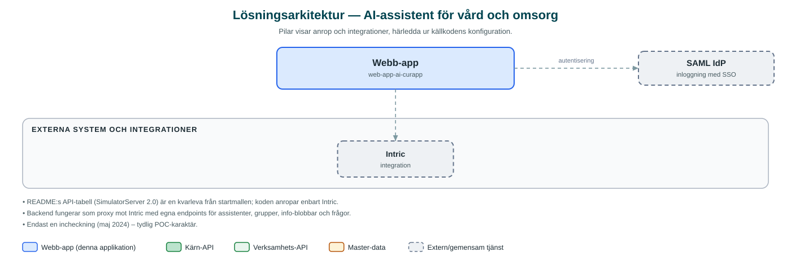

AI-assistent för vård och omsorg
En AI-assistent där medarbetare inom vård och omsorg kan ställa frågor om rutiner och regler och få svar med källhänvisningar.
Om applikationen
Tjänsten är en chattbaserad AI-assistent (i gränssnittet kallad AI-Cura) som svarar på frågor om rutiner och regler inom vård, omsorg, hälsa och sjukvård. Medarbetaren ställer sin fråga i ett sökfält och får ett svar genererat av en AI-assistent, ofta med hänvisningar till de dokument som svaret bygger på.
Assistenten drivs av kommunens AI-plattform Intric, där kunskapsunderlag i form av dokument samlas i grupper som assistenten söker i. På så vis kan personalen snabbt hitta rätt i styrdokument och rutinbeskrivningar utan att leta manuellt.
Repot består av en enda inledande incheckning från 2024 och användaridentiteten sätts via miljövariabler, vilket tyder på att det rör sig om en pilot/proof of concept snarare än en färdig tjänst.
Det här stödjer applikationen
- Fråga i naturligt språk – Medarbetaren skriver sin fråga om rutiner eller regler och får ett formulerat svar direkt.
- Källhänvisningar – Svaren kan visa vilka dokument informationen kommer ifrån.
- Kunskapsbas via Intric – Assistenten söker i uppladdade dokument som förvaltas i AI-plattformen Intric.
- Chatthistorik i sessionen – Frågor och svar visas i en konversationsvy som kan rensas.
Teknisk dokumentation
Nedan beskrivs hur applikationen är uppbyggd, vilka API:er den använder och vad som krävs för att driftsätta den. Informationen är härledd ur källkoden och dess konfiguration på GitHub.
Arkitektur

Applikationen består av en webbaserad frontend (Next.js, React, TypeScript, Tailwind CSS, sk-web-gui) och en backend (Node.js, Express (routing-controllers), Prisma, Passport SAML) som utvecklas i samma kodbas. Inloggning: Hash-baserad identifiering av användare; SAML SSO finns förberett i grundplattformen. Övriga integrationer som förekommer i koden: Intric.
Teknikstack
- Frontend: Next.js, React, TypeScript, Tailwind CSS, sk-web-gui
- Backend: Node.js, Express (routing-controllers), Prisma, Passport SAML
API-beroenden
Inga prenumerationer på kommunens API-plattform hittades i källkodens konfiguration.
Konfiguration och driftsättning
- Miljöfiler för frontend (.env) och backend (.env.development.local m.fl.)
- Intric-uppgifter: INTRIC_API_BASE_URL, API-nyckel och assistent-id samt salt för hashning
- SAML-inställningar med certifikat och nycklar (från grundmallen)
- CLIENT_KEY/CLIENT_SECRET för WSO2 finns i mallen men inga kommun-API:er anropas i koden
Noterbart ur källkoden
- README:s API-tabell (SimulatorServer 2.0) är en kvarleva från startmallen; koden anropar enbart Intric.
- Backend fungerar som proxy mot Intric med egna endpoints för assistenter, grupper, info-blobbar och frågor.
- Endast en incheckning (maj 2024) – tydlig POC-karaktär.
Källkod
Källkoden är öppen och finns hos Sundsvalls kommun på GitHub. I källkodsförrådet finns även instruktioner för att klona, konfigurera och starta applikationen i egen miljö.